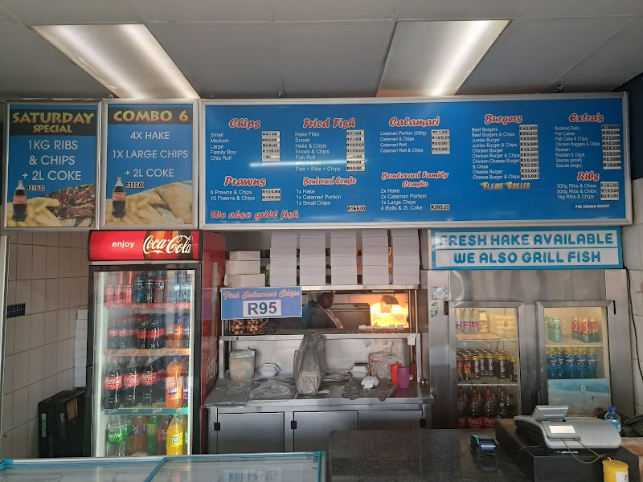

Sumptuous fish and chips, ready for takeaway in Uitzicht's heart.
Get In TouchLocated in the heart of Uitzicht, Boulevard Fisheries Uitzicht is a beloved destination for locals and visitors alike seeking the finest quality fish and chips. Our focus is on providing generous portion sizes without compromising on taste or quality. Every order is prepared fresh to ensure a delightful takeaway experience.
Our story began with a passion for seafood and a commitment to delivering the best fish and chips to our community. We pride ourselves on our consistent quality and friendly service, which has earned us a loyal customer base. The takeaway setup ensures that we can serve our delicious offerings quickly, and our two small tables provide a cozy waiting area.
At Boulevard Fisheries Uitzicht, we value quality, freshness, and customer satisfaction above all. We encourage our customers to order ahead as our fish and chips are made to order, usually taking about 15 minutes. We are dedicated to serving you delightful meals that bring a taste of the sea to your table.
At Boulevard Fisheries Uitzicht, we specialize in providing high-quality takeaway fish and chips that leave our customers satisfied and coming back for more.

Enjoy our crispy, golden fish and chips, served in generous portions. Perfect for a quick lunch or dinner on the go. Order ahead to minimize your wait time.
We'd love to hear from you — reach out to us anytime.